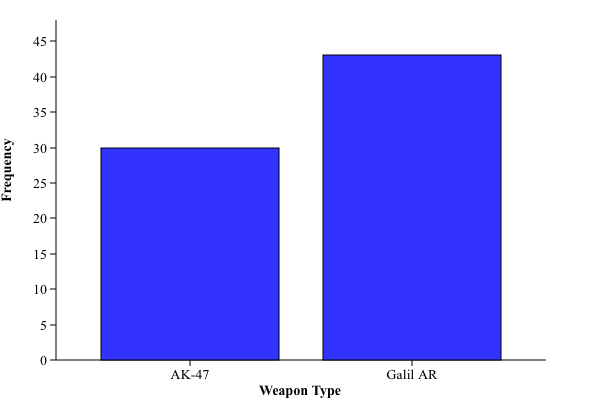
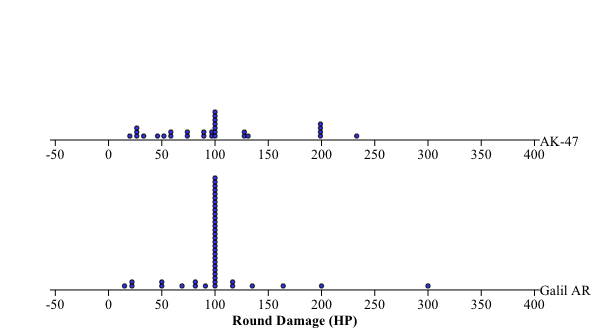

Research Question: Does equipping the AK-47 produce a statistically significant increase in Average Damage per Round (ADR) during T-side "Full-Buy" rounds (>$3,900) compared to equipping the Galil AR in Premier CS2 matches?
Operational Definition: Round Damage (HP) = total health damage dealt in a T-side full-buy round (0–500 HP). Full-Buy = >$3,900 start money (excluding pistol, eco, and force-buy rounds).
Design: Randomized Comparative Experiment.
Assignment: Pre-game coin flip (Heads = AK-47, Tails = Galil AR).
Control Protocol: Buy only assigned rifle on >$3,900 T-side rounds. Early forfeits or wrong-weapon buys discarded.
Hypothetical Sampling Paths:
randInt(1, 500).Population: All T-side full-buy competitive rounds played under Premier CS2 match conditions.
Sample: n = 73 T-side full-buy rounds across 10 completed matches (30 AK-47, 43 Galil AR).
Scope: Random assignment allows causal inference for this player, but lack of random selection prevents generalization to all CS2 players.
Explanatory Variable (Categorical): Assigned Rifle Type (2 levels: AK-47 vs. Galil AR).
Response Variable (Quantitative): Player Damage Dealt per T-side Full-Buy Round (measured in HP, range 0–500 HP).
| Weapon Treatment | Frequency | Rel. Freq. |
|---|---|---|
| AK-47 | 30 rounds | 41.1% |
| Galil AR | 43 rounds | 58.9% |
| Total | 73 rounds | 100.0% |

[ Place Image Here: wt.png ]Segmented Bar Chart / Mosaic Plot displaying categorical round frequencies (30 AK vs 43 Galil).
| Group | n | &bar;x | s | Min | Q1 | Med | Q3 | Max | IQR |
|---|---|---|---|---|---|---|---|---|---|
| AK-47 | 30 | 124.6 | 84.2 | 0 | 51.0 | 100.0 | 198.0 | 300.0 | 147.0 |
| Galil | 43 | 120.3 | 79.1 | 0 | 26.0 | 100.0 | 180.0 | 300.0 | 154.0 |
1.5 × IQR Outlier Calculations:
Comparative visual displays showing quantitative round damage distributions across both treatments.

[ Place Image Here: rd.png ]Histograms and parallel Box Plots illustrating shape, center, spread, and lack of outliers for AK-47 vs Galil AR.